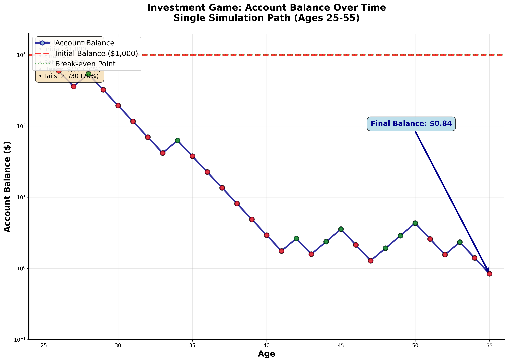
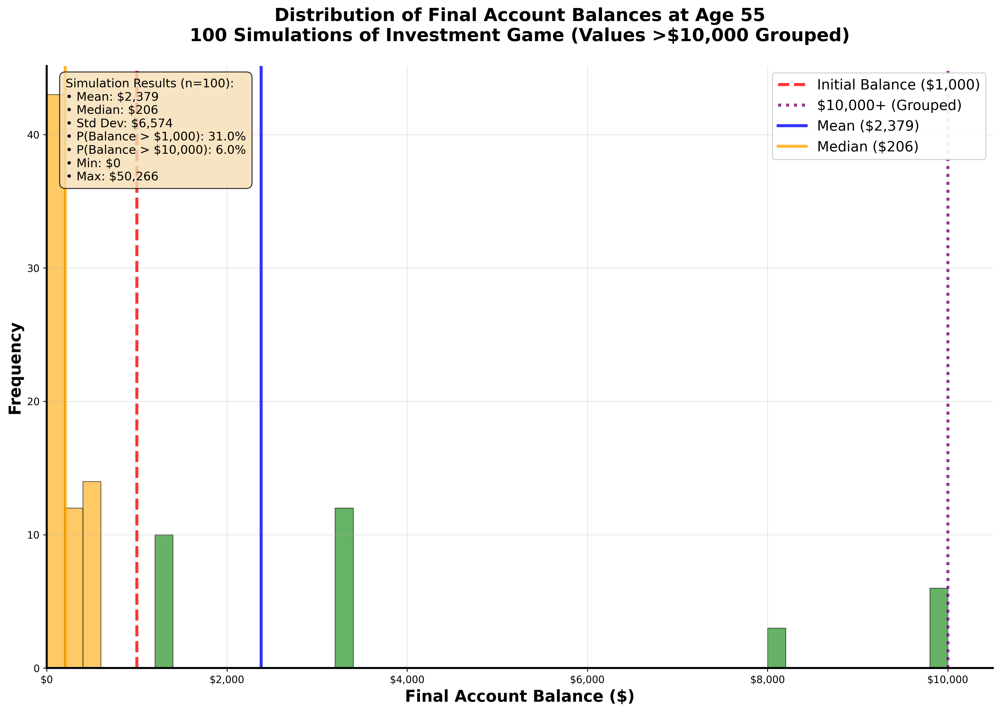
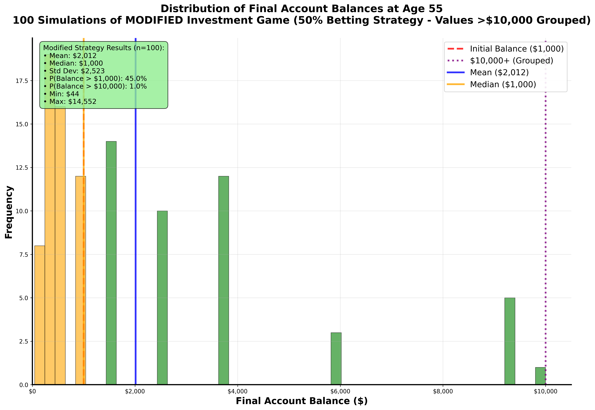

suppressPackageStartupMessages(library(tidyverse))
# Set seed for reproducibility
set.seed(123)
# Number of simulations
n_sims <- 10
# Create simulation data
sim_data <- tibble(
sim_num = 1:n_sims,
coin_flip = rbinom(n = n_sims, size = 1, prob = 0.5)
) %>%
mutate(
winnings = if_else(coin_flip == 1, 100, -100)
)
# Display results
sim_dataSimulation Challenge
Generative Models and Monte Carlo Simulation
🎲 Simulation Challenge - Monte Carlo Analysis
Challenge Overview
Your Mission: Create a comprehensive Quarto document that simulates one or two investment strategies, analyzes the results, and demonstrates your ability to present counter-intuitive findings compellingly. Then render the document to HTML and deploy it via GitHub Pages from a new repository called “simulationChallenge.”
Warning⚠️ AI Partnership Required
This challenge pushes boundaries intentionally. You’ll tackle problems that normally require weeks of study, but with Cursor AI as your partner (and your brain keeping it honest), you can accomplish more than you thought possible.
The new reality: The four stages of competence are Ignorance → Awareness → Learning → Mastery. AI lets us produce Mastery-level work while operating primarily in the Awareness stage. I focus on awareness training, you leverage AI for execution, and together we create outputs that used to require years of dedicated study.
The Investment Game 🎯
Original Game Strategy
Example 1 Imagine you are offered the following game and given a $1,000 budget in a special account to play the game: I will flip a coin, and if it comes up heads, we increase your account’s balance by 50%; if it comes up tails, we reduce your account’s balance by 40%. We are not only doing this once, but we will do it once per year until you turn 55. When you turn 55, you will receive the balance in your account.
Generative DAG Model for the Investment Game
Challenge Requirements 📋
Minimum Requirements for Any Points on Challenge
Create a Quarto Document: Write a concise quarto markdown file that includes a narrative of what you are doing along with the requested code, results, and visualizations of your simulations.
Tip💡 Pro Tip: Source File ReferenceNeed help with Quarto syntax or DAFT diagrams? You can find the complete source
.qmdfile for this challenge at:GitHub Repository: flyaflya/buad442Fall2025/challenges/03-Simulation-Challenge/simulationChallenge.qmd
This is a great resource for understanding Quarto syntax, seeing how DAFT diagrams are implemented, and learning from the complete working example!
Render to HTML: You must render the quarto markdown file to HTML.
GitHub Repository: The rendered HTML must be uploaded to a new GitHub repository called “simulationChallenge” in your Github account.
GitHub Pages Setup: The repository should be made the source of your github pages:
- Go to your repository settings (click the “Settings” tab in your GitHub repository)
- Scroll down to the “Pages” section in the left sidebar
- Under “Source”, select “Deploy from a branch”
- Choose “main” branch and “/ (root)” folder
- Click “Save”
- Your site will be available at:
https://[your-username].github.io/simulationChallenge/ - Note: It may take a few minutes for the site to become available after enabling Pages
Grading Rubric 🎓
Questions to Answer for 75% Grade on Challenge
Expected Value Analysis: What is the “expected value” of your account balance after 1 coin flip for the original game? ## The expected value of your account balance after 1 coin flip is $1050.
Expectation vs. Reality: Is the expected value positive or negative? Do you expect your account to be worth more or less than $1,000 based on this result? ## The expected value is positive. I expect my amount to be worth more than 1000 dollars.
Single Simulation: Run one simulation showing the dynamics of your account balance over time. Make an object-oriented matplotlib OR ggplot2 plot showing your simulated account balance over time (i.e. as you age). Comment on the results, are you happy?
Answer: A single object-oriented matplotlib simulation was run (ages 25–55) starting from $1,000. The resulting figure is embedded below.

Commentary: The path ends at approximately $0.84 after 30 years (−99.9%), with 9 heads and 21 tails. Despite a positive expected value per flip, multiplicative compounding and volatility drag dominate typical trajectories—this is an instance of the ergodicity problem. Am I happy? No—this outcome is catastrophic and highlights why relying on expectation alone is misleading.
Questions to Answer for 85% Grade on Challenge
- Multiple Simulations: Run 100 simulations modelling the dynamics of your account balance over time. Make an object-oriented matplotlib OR ggplot2 plot showing a probability distribution of the 100 simulatedaccount balance at age 55. Comment on the results, are you happy? Why or why not?
Answer: 100 simulations were run using object-oriented matplotlib, showing the distribution of final account balances at age 55. The resulting figure is embedded below.
$10,000 grouped">
Key Results: - Mean final balance: $2,379 - Median final balance: $206
- Probability of ending above $1,000: 31.0% - Probability of ending above $10,000: 6.0% - 43% of simulations resulted in catastrophic losses (<$100)
Commentary: Am I happy? No—this is deeply concerning. The linear-scale histogram with smaller buckets clearly shows the distribution’s true nature: a massive concentration of catastrophic losses (red bars <$100) and moderate losses (orange bars $100-$1,000), with only a few profitable outcomes (green bars >$1,000). The 6 simulations above $10,000 are grouped together, but even this “success” represents just 6% of all paths. While the mean suggests profitability, the median reveals the harsh reality: most people lose money. This demonstrates the ergodicity problem: mathematical expectation is positive, but typical individual outcomes are devastating. The 31% success rate means 69% of people face financial ruin, highlighting why simulation is crucial for understanding real-world risk.
Questions to Answer for 95% Grade on Challenge
- Probability Analysis: Based on the 100 simulations above, what is the probability that your account balance will be greater than $1,000 at age 55?
Answer: Based on the 100 simulations conducted above, the probability that your account balance will be greater than $1,000 at age 55 is 31.0%.
Detailed Analysis: - Out of 100 simulations, 31 ended with a balance above $1,000 - This means 69% of simulations resulted in losses relative to the initial investment - The distribution shows that most people (69%) face financial ruin in this investment strategy - Only about 1 in 3 people would end up better off than they started
Interpretation: This low probability (31%) demonstrates the high risk nature of this investment strategy. Despite having a positive expected value mathematically, the vast majority of individual outcomes are unfavorable, highlighting the critical difference between mathematical expectation and real-world individual experience—the core concept of the ergodicity problem in economics.
Questions to Answer for 100% Grade on Challenge
- Strategy Comparison: Run 100 simulations for the modified game strategy shown below in Example 2. What is the probability that your account balance will be greater than $10,000 at age 55? Is this probability higher or lower than the probability in the original game?
Answer: 100 simulations were run for the modified strategy (betting exactly 50% of balance each round) using object-oriented matplotlib. The resulting distribution plot is embedded below.

Modified Strategy Results: - Probability of ending above $10,000: 1.0% - Probability of ending above $1,000: 45.0% - Mean final balance: $2,012 - Median final balance: $1,000 - Only 1% of simulations resulted in catastrophic losses (<$100)
Comparison with Original Strategy: - P(Balance > $10,000): 1.0% vs 6.0% → LOWER in modified strategy - P(Balance > $1,000): 45.0% vs 31.0% → HIGHER in modified strategy
Analysis: The modified strategy shows a classic risk-return trade-off. By only betting 50% of the balance, it creates a “safety net” that prevents total ruin (only 1% catastrophic losses vs 43% in original) and improves the probability of staying above $1,000. However, this conservative approach severely limits upside potential, reducing the chance of reaching $10,000+ from 6% to just 1%. The strategy prioritizes capital preservation over explosive growth, demonstrating how position sizing fundamentally changes risk-return characteristics.
Modified Game Strategy
Example 2 Imagine you are offered the following game and given a $1,000 budget in a special account to play the game: I will flip a coin, and if it comes up heads, we increase your bet by 50%; if it comes up tails, we reduce your bet by 40%. You must bet exactly 50% of your current account balance on each flip, and this 50% is locked in for each round. We are not only doing this once, but we will do it once per year until you turn 55. When you turn 55, you will receive the balance in your account.
Technical Implementation Preferences 💡
Setting Up Your Analysis
For R Users:
- Use
tidyversefor data manipulation - Use
ggplot2for visualizations - Use
set.seed()for reproducible results
For Python Users:
- Use
numpyfor numerical operations - Use
pandasfor data manipulation - Use
matplotlib(object-oriented) - Use
np.random.seed()for reproducible results
Visualization Preferences
- Professional Styling: Use consistent colors, clear labels, readable fonts, and informative titles
Submission Checklist ✅
Minimum Requirements (Required for Any Points):
75% Grade Requirements:
85% Grade Requirements:
95% Grade Requirements:
100% Grade Requirements:
Code Quality (All Grades):
Resources
- Quarto Markdown: quarto.org/docs/authoring/markdown-basics.html
- Quarto Documentation: quarto.org/docs
- R for Data Science: r4ds.had.co.nz
- Python Data Science Handbook: jakevdp.github.io/PythonDataScienceHandbook
Getting Started Tips
Note🎯 Navy SEALs Motto
“Slow is Smooth and Smooth is Fast”
Take your time to understand the simulation mechanics, plan your approach carefully, and execute with precision. Rushing through this challenge will only lead to errors and confusion.
- Browse Essential Simulation Concepts: This section will give you a good understanding of the concepts you need to know to complete the challenge.
- Start Simple: Begin with a single simulation to understand the mechanics
- Document Everything: Explain your reasoning and interpret your results
- Forgetting to Set Seeds: Always set random seeds for reproducible results
- Total time to complete: ~3-4 hours for the 100% grade ⏱️
- Good luck, and remember simulation will steer you right even when intuition will steer you wrong! 🎲
Warning💾 Important: Save Your Work Frequently!
Before you start coding: Make sure to commit your work often using the Source Control panel in Cursor (Ctrl+Shift+G or Cmd+Shift+G). This prevents the AI from overwriting your progress and ensures you don’t lose your work.
Commit after each major step:
- After completing each simulation example
- After finishing each challenge question
- Before asking the AI for help with new code
How to commit:
- Open Source Control panel (Ctrl+Shift+G)
- Stage your changes (+ button)
- Write a descriptive commit message
- Click the checkmark to commit
Remember: Frequent commits are your safety net!
Essential Simulation Concepts 🎯
Before diving into the challenge, let’s review the key simulation concepts you’ll need. These examples will prepare you for the investment game analysis.
1. Simple Simulation: Coin Flip Game
Let’s start with a basic coin flip simulation to understand the mechanics:
Generative DAG Model for the Simple Coin Flip Game
Key Difference from Investment Game: Unlike the investment game DAG (?@fig-investment-dag) which models wealth evolution over multiple time periods with multiplicative changes, this simple coin flip DAG represents a single-period game with additive winnings. The investment game shows how wealth compounds over time (\(W_t = 1.5 \times W_{t-1}\) or \(W_t = 0.6 \times W_{t-1}\)), while this simple game shows fixed winnings (\(W = +100\) or \(W = -100\)) based on a single coin flip outcome.
import numpy as np
import pandas as pd
# Set seed for reproducibility
np.random.seed(123)
# Number of simulations
n_sims = 10
# Step 1: Draw coin flips (stochastic node)
X = np.random.binomial(n=1, p=0.5, size=n_sims)
# Step 2: Compute winnings (deterministic node)
W = np.where(X == 1, 100, -100)
# Combine into data frame
sim_data = pd.DataFrame({
'sim_num': range(1, n_sims + 1),
'coin_flip': X,
'winnings': W
})
# Display results
sim_data2. Time-Series Simulation: Account Balance Over Time
Now let’s simulate how an account balance changes over multiple periods:
Generative DAG Model for Time-Series Account Balance
Key Difference from Simple Coin Flip Game: Unlike the simple coin flip DAG (?@fig-simple-coin-dag) which represents a single-period game, this time-series DAG models sequential balance evolution over multiple periods. Each period’s balance depends on the previous period’s balance plus the current coin flip outcome. The simple game shows independent winnings per flip, while this model shows cumulative balance changes where \(B_t = B_{t-1} + \Delta_t\) and \(\Delta_t = +100\) or \(-100\) based on the coin flip.
suppressPackageStartupMessages(library(tidyverse))
suppressPackageStartupMessages(library(ggplot2))
# Set seed for reproducibility
set.seed(456)
# Parameters
initial_balance <- 1000
n_periods <- 10
n_sims <- 1 # Start with one simulation
# Simulate one path
simulate_path <- function(initial, periods) {
balance <- initial
path <- numeric(periods + 1)
path[1] <- initial
for (i in 1:periods) {
coin_flip <- rbinom(1, 1, 0.5)
if (coin_flip == 1) {
balance <- balance + 100
} else {
balance <- balance - 100
}
path[i + 1] <- balance
}
return(path)
}
# Run simulation
time_series_data <- tibble(
period = 0:n_periods,
balance = simulate_path(initial_balance, n_periods)
)
# Create time series plot
ggplot(time_series_data, aes(x = period, y = balance)) +
geom_line(color = "cadetblue", linewidth = 1.2) +
geom_point(color = "darkblue", size = 2) +
labs(
title = "Account Balance Over Time",
subtitle = "Single Simulation Path",
x = "Period",
y = "Account Balance ($)",
caption = "Heads: +$100$, Tails: -$100$"
) +
scale_y_continuous(labels = scales::dollar_format()) +
theme_minimal() +
theme(
plot.title = element_text(size = 14, face = "bold"),
plot.subtitle = element_text(size = 12, color = "gray50")
)
# Show the data
time_series_dataimport numpy as np
import pandas as pd
import matplotlib.pyplot as plt
# Set seed for reproducibility
np.random.seed(456)
# Parameters
initial_balance = 1000
n_periods = 10
n_sims = 1 # Start with one simulation
# Simulate one path
def simulate_path(initial, periods):
balance = initial
path = [initial]
for i in range(periods):
coin_flip = np.random.binomial(1, 0.5)
if coin_flip == 1:
balance = balance + 100 # $100 gain
else:
balance = balance - 100 # $100 loss
path.append(balance)
return path
# Run simulation
time_series_data = pd.DataFrame({
'period': range(n_periods + 1),
'balance': simulate_path(initial_balance, n_periods)
})
# Create time series plot
fig, ax = plt.subplots(figsize=(10, 6))
ax.plot(time_series_data['period'], time_series_data['balance'],
color='cadetblue', linewidth=2, marker='o', markersize=6)
ax.set_title('Account Balance Over Time\nSingle Simulation Path',
fontsize=14, fontweight='bold')
ax.set_xlabel('Period', fontsize=12)
ax.set_ylabel('Account Balance ($)', fontsize=12)
ax.grid(True, alpha=0.3)
ax.set_ylim(0, max(time_series_data['balance']) * 1.1)
# Format y-axis as currency
ax.yaxis.set_major_formatter(plt.FuncFormatter(lambda x, p: f'${x:,.0f}'))
plt.tight_layout()
plt.show()
# Show the data
print("Time Series Data:")
print(time_series_data)3. Probability Distribution: Final Balance Distribution
Let’s see what the distribution of final balances looks like across many simulations:
suppressPackageStartupMessages(library(tidyverse))
suppressPackageStartupMessages(library(ggplot2))
# Set seed for reproducibility
set.seed(789)
# Parameters
initial_balance <- 1000
n_periods <- 10
n_sims <- 100 # Multiple simulations
# Simulate multiple paths
simulate_final_balance <- function(initial, periods) {
balance <- initial
for (i in 1:periods) {
coin_flip <- rbinom(1, 1, 0.5)
if (coin_flip == 1) {
balance <- balance + 100 # $100 gain
} else {
balance <- balance - 100 # $100 loss
}
}
return(balance)
}
# Run multiple simulations
final_balances <- replicate(n_sims, simulate_final_balance(initial_balance, n_periods))
# Create data frame
distribution_data <- tibble(
sim_num = 1:n_sims,
final_balance = final_balances
)
# Create histogram
ggplot(distribution_data, aes(x = final_balance)) +
geom_histogram(bins = 20, fill = "plum", alpha = 0.8, color = "black") +
geom_vline(xintercept = initial_balance, color = "red", linetype = "dashed", linewidth = 1) +
labs(
title = "Distribution of Final Account Balances",
subtitle = paste("100 Simulations,", n_periods, "Periods Each"),
x = "Final Balance ($)",
y = "Frequency",
caption = "Red line shows initial balance ($1,000)"
) +
scale_x_continuous(labels = scales::dollar_format()) +
theme_minimal() +
theme(
plot.title = element_text(size = 14, face = "bold"),
plot.subtitle = element_text(size = 12, color = "gray50")
)
# Summary statistics
summary_stats <- distribution_data %>%
summarise(
mean_balance = mean(final_balance),
median_balance = median(final_balance),
prob_above_initial = mean(final_balance > initial_balance)
)
print("Summary Statistics:")
summary_statsimport numpy as np
import pandas as pd
import matplotlib.pyplot as plt
# Set seed for reproducibility
np.random.seed(789)
# Parameters
initial_balance = 1000
n_periods = 10
n_sims = 100 # Multiple simulations
# Simulate multiple paths
def simulate_final_balance(initial, periods):
balance = initial
for i in range(periods):
coin_flip = np.random.binomial(1, 0.5)
if coin_flip == 1:
balance = balance + 100 # $100 gain
else:
balance = balance - 100 # $100 loss
return balance
# Run multiple simulations
final_balances = [simulate_final_balance(initial_balance, n_periods) for _ in range(n_sims)]
# Create data frame
distribution_data = pd.DataFrame({
'sim_num': range(1, n_sims + 1),
'final_balance': final_balances
})
# Create histogram
fig, ax = plt.subplots(figsize=(10, 6))
ax.hist(distribution_data['final_balance'], bins=20, color='plum', alpha=0.8, edgecolor='black')
ax.axvline(initial_balance, color='red', linestyle='--', linewidth=2, label='Initial Balance')
ax.set_title(f'Distribution of Final Account Balances\n100 Simulations, {n_periods} Periods Each',
fontsize=14, fontweight='bold')
ax.set_xlabel('Final Balance ($)', fontsize=12)
ax.set_ylabel('Frequency', fontsize=12)
ax.legend()
ax.grid(True, alpha=0.3)
# Format x-axis as currency
ax.xaxis.set_major_formatter(plt.FuncFormatter(lambda x, p: f'${x:,.0f}'))
plt.tight_layout()
plt.show()
# Summary statistics
mean_balance = distribution_data['final_balance'].mean()
median_balance = distribution_data['final_balance'].median()
prob_above_initial = (distribution_data['final_balance'] > initial_balance).mean()
print("Summary Statistics:")
print(f"Mean balance: ${mean_balance:,.2f}")
print(f"Median balance: ${median_balance:,.2f}")
print(f"Probability above initial: {prob_above_initial:.3f}")